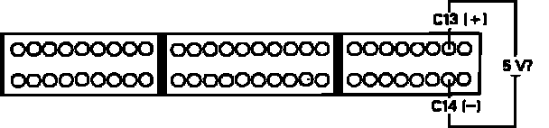
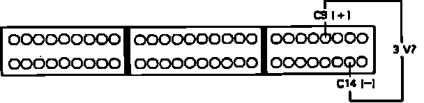

DTC 13
Code 13 indicates a problem in the atmospheric pressure (PA) sensor or circuit.1. Remove Alternator Sense fuse in underhood relay box for 10 seconds to reset ECU.
2. Turn ignition on and observe diagnostic LED.
Flashes code 13, proceed to step 4.
Does not flash, proceed to next step.
3. Malfunction is intermittent, check connections at PA sensor and ECU. End of test.
4. Turn ignition off.
5. Install test harness between ECU and harness connector. If test harness is not available, carefully backprobe wires at ECU connector.
Atmospheric Pressure (PA) Sensor Code 13 Diagnosis:

6. With ignition on, check voltage across ECU terminals C13 and C14.
Approx. 5 volts, proceed to next step.
Not approx. 5 volts, replace electronic control unit. End of test.
Atmospheric Pressure (PA) Sensor Testing:

7. Measure voltage between C9 and C14.
Approx. 3 volts, replace electronic control unit. End of test.
Approx. 5 volts, proceed to next step.
Not 3 or 5 volts, proceed to step 9.
8. Repair open RED wire between ECU terminal C9 and PA sensor. End of test.
9. Turn ignition off. disconnect PA 3 wire connector behind under dash fuse box.
10. Check for voltage between YEL/WHT sensor wire and ground.
Approx. 5 volts, proceed to step 12.
Not approx. 5 volts, proceed to next step.
11. Repair open YEL/WHT wire between ECU terminal C13 and PA sensor. End of test.
12. Measure voltage between YEL/WHT and GRN/WHT terminals.
Approx. 5 volts, proceed to step 14.
Not approx. 5 volts, proceed to next step.
13. Repair open GRN/WHT wire between ECU terminal C14 and PA sensor.
14. Measure voltage between RED and GRN/WHT wires.
Approx. 5 volts, replace PA sensor. End of test.
Not approx. 5 volts, proceed to next step.
15. Check for short in RED wire between ECU terminal C9 and PA sensor. If wire checks OK, replace electronic control unit.